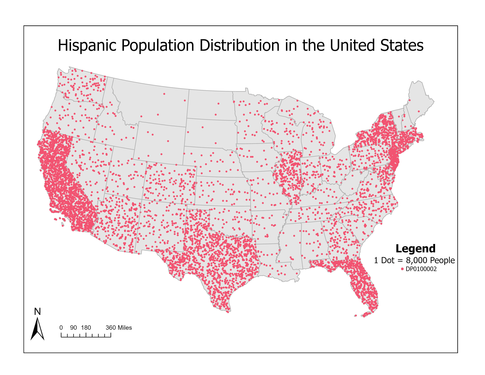

Fig. 1Map 01
Hispanic Population Distribution in the United States
To solve this problem we get data from the U.S Census Bureau, use the project to convert the file to the NAD 1983 Contiguous USA Albers projected coordinate system. Then we select and export the 48 Contiguous United States to create a new shapefile. Now we touch on the symbology, for a dot density map we change the primary symbology to dot density and for a choropleth map we change it to graduated colors. Afterwards we change the field to whatever data is needed then create a layout where we add the legend, scale and north arrow to make it look professional. With all of that we can answer the question in Part II.
Keyword 1
Keyword 2
Keyword 3
Software ArcGIS
Projection EPSG:XXXX
Data sourceYour data source
Year 2026